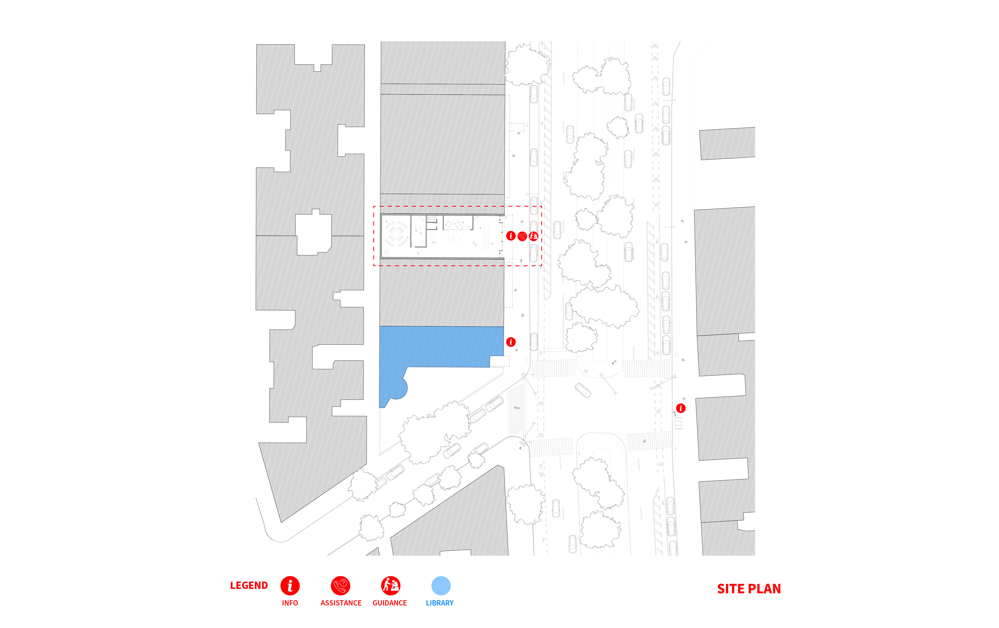

1 / 3

_
2 / 3

_
3 / 3

_
Understanding that Community Health Workers may need space to work, gather, and meet with community members, we propose leveraging vacant spaces within the communities most in need to create new CHW Hubs. To locate these Hubs, we first looked at existing spaces of care within our high eviction focus area. We then looked for census tracts without one of these community resources and searched for vacant spaces. In the area surrounding the River Park Towers, we located a few potential Hubs. This density responds to the large number of evictions in the neighborhood.

We imagine these Hubs as spaces that serve several aspects of the proposal. They can be spaces for organizing and accessing help, information distribution centers, and an alternative to the punative court system.
Ut wisi enim ad minim veniam, quis nostrud exerci tation ullamcorper suscipit lobortis nisl ut aliquip ex ea commodo consequat.

Ut wisi enim ad minim veniam, quis nostrud exerci tation ullamcorper suscipit lobortis nisl ut aliquip ex ea commodo consequat.

In order to better facilitate Tenant/Landlord resolution, we feel there needs to be an alternative space to the traditional courtroom. This space should be comfortable, non-heirarchical and supportive.